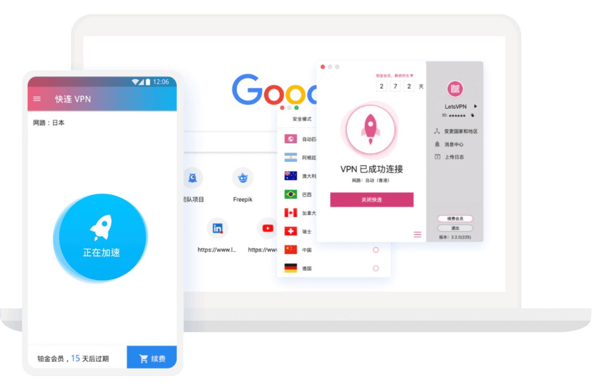
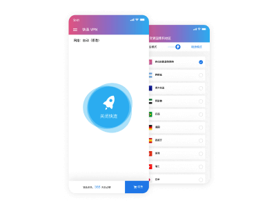

快连Lets下载 | 让您的网络体验更加流畅
🏅 已获得 AppEsteem 国际网络安全认证
3s极速连接
72h免费试用
1000+应用支持

快连Lets下载：一键连接，稳定高速
客户端内置智能选点、协议自适应与断线重连；加密隧道保护敏感数据，公共 Wi-Fi 场景也能安心使用。 多线路下载与 CDN 加速提升获取速度与连通性体验。
- 多线路下载与加速入口，减少高峰拥堵
- 智能选点 + 自动重连，弱网环境更稳
- 端到端加密传输，保障账号与文件安全
- 桌面与移动端统一体验，跨设备无缝切换
全平台支持：电脑端与移动端一站到位
快连Lets 提供 Windows / macOS 桌面客户端与 Android / iOS 移动应用，支持开机自启、智能分流与一键测速。 远程协作、资料访问或视频平台观看，都能在稳定性与速度之间取得平衡。
适用场景：跨境办公 / 影音娱乐 / 出差旅行
外贸与跨境团队可稳定访问常用工具；影音用户可减少缓冲卡顿； 频繁差旅的用户在公共网络环境下也能通过加密通道保护登录与传输安全。

下载与安装：三步完成
- 选择平台：点击上方 Windows / macOS / Android / iOS 入口下载。
- 完成安装：按系统提示完成安装或信任来源（iOS/Android）。
- 连接使用：登录后选择就近节点，一键连接即可加速。
若下载缓慢，可更换时段重试或切换备用下载地址。
常见问题
下载后无法安装怎么办？
Windows 以管理员身份运行；macOS 在“系统设置 → 隐私与安全”中信任来源；Android 开启“允许来自此来源”；iOS 按提示完成信任。
连接不稳定如何优化？
切换协议或节点；在网络更空闲的时段重连；如为公司网络，确认是否存在限速或代理规则。
是否记录用户活动？
请查看应用内隐私策略与使用条款，遵循最小化日志原则。